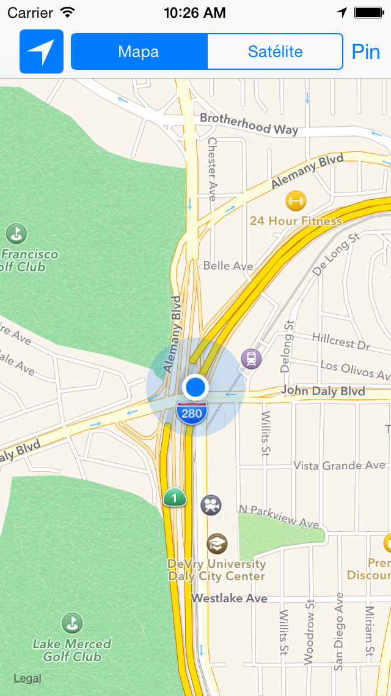
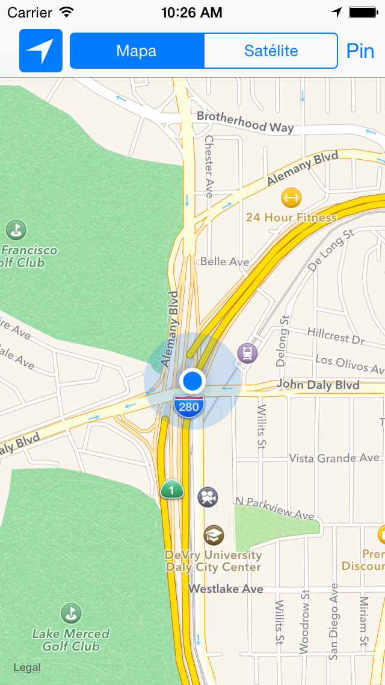
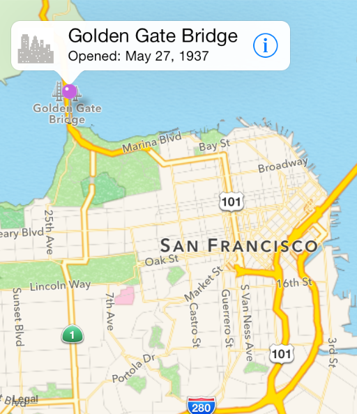
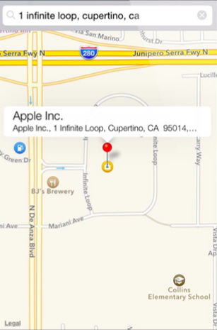

Mapas y localización¶
MapKit¶
Aspectos básicos de MapKit¶
Map Kit es el framework de Apple para trabajar con mapas.
Permite muchas funcionalidades: pan y zoom, anotaciones, localización, overlays, búsquedas, rutas, direcciones, etc.
Junto con los servicios de localización proporciona la forma de incluir datos geográficos en nuestras apps.
 

Aspectos básicos de MapKit¶
Los mapas permiten a los usuarios a visualizar datos geográficos de una forma fácil de entender. Por ejemplo, un mapa puede mostrar datos de satélite de un área, o una visualización tridimensional de una perspectiva de la zona.
El framework Map Kit permite embeber en tu app un map completamente
funcional, que soporta funcionalidades similares a la de la app
Mapas.
Con Map Kit puedes incorporar en tu app vistas de un punto geográfico concreto. Además, el framework te permite añadir capas de información sobre el mapa, moverlo, o tomar instantáneas de un mapa para imprimir.
Un ejemplo de la app Mapas mostrando una vista 3D de Alicante:

Geometría de los mapas¶

Map Kit usa una proyección Mercator, que es un tipo específico de proyección cilíndrica.
Una coordenada se define por una latitud y una longitud.
-
La latitud es la distancia angular (en grados: de -90.0 a 90.0) desde el punto de la superficie hasta el ecuador. Las latitudes positivas definen puntos por encima del ecuador y las negativas por debajo.
-
La longitud es la distancia angular (en grados: de -180.0 a 180.0) desde el punto de la superficie hasta el meridiano 0 (meridianto de Greenwich). Las longitudes positivas definen puntos al este del meridiano y las negativas al oeste.
La estructura
CLLocationCoordinate2D
representa esta estructura. Por ejemplo, para crear una localización
situada en Alicante:
1 2 | |
Otros puntos¶
Un punto en el mapa se define por los valores x e y en la
proyección de Mercator. Se define utilizando la estructura
MKMapPoint. Se
utiliza para especificar la posición y forma de los overlays que
podemos pintar sobre el mapa.
Un punto es una unidad gráfica asociada con el sistema de
coordenadas de una vista. Los puntos en el mapa y las coordenadas
deben convertirse en puntos antes de dibujar contenido en una
vista. Los puntos individuales se definen usando la estructura
CGPoint y las áreas usando CGSize y CGRect. Consultar las
funciones del API de geometría y los tipos de datos en este
enlace.
Para almacenar los datos en ficheros es preferible usar coordenadas de mapas.
Permisos para activar los mapas en nuestra app¶
Para poder distribuir apps que trabajen con el servicio de mapas es necesario activar en la app el entitlement correspondiente, activando los servicios que necesitamos.
Debemos tener un perfil de aprovisionamiento aprobado con un App ID que soporte estos servicios.
No es necesario para el desarrollo y las pruebas.

Añadir un mapa en nuestra app¶
La clase
MKMapView
es una interfaz autocontenida para presentar los mapas en tu
app. Proporciona todo el soporte para mostrar los datos del mapa,
gestionar las interacciones del usuario y hospedar el contenido
proporcionado por tu app. Debes importar MapKit.
No debes hacer una subclase de MKMapView sino embeberla tal cual en
la jerarquía de vistas de tu app:
- Usando el Interface Builder puedes arrastrar un objeto Map view a la vista o ventana apropiada.
- Para añadir un mapa por programa, crea una instancia de la clase
MKMapView, inicialízala con el métodoinitWithFrame:y añádela como una subvista a tu ventana o a tu vista.
Por último debes actualizar el delegado con un objeto que cumpla
el protocolo
MKMapViewDelegate.
Ejemplo de código para añadir un mapa mediante programa:
1 2 3 4 5 6 7 8 9 10 11 12 13 14 15 16 17 | |
El resultado tiene el siguiente aspecto:
Inicialización del mapa¶
Podemos también inicializar el mapa cuando se crea usando el
Interface Builder, usando un didSet en el outlet mapView que
definimos arrastrando desde el storyboard:
1 2 3 4 5 6 7 8 9 10 11 12 13 14 15 16 17 18 19 20 21 22 23 24 25 26 27 28 29 30 31 | |
Para que los controles del mapa funcionen correctamente es necesario
asignar el delegado MKMapViewDelegatea un objeto que defina las
funciones de este delegado. Lo más sencillo es definir el propio View
Controller como el delegado.
La propiedad region del mapa controla el área del mapa
mostrada. Contiene al mismo tiempo el punto de longitud y latitud en
el que el mapa está centrado y la zona visible, determinando de forma
implícita el zoom del mapa.
Por ejemplo, el código anterior centra el mapa en Alicante y muestra una zona de 4 km. de alto y ancho.
Tipos de mapas¶
La definición del tipo de mapa se controla con la propiedad
mapType del mapa.
Puede tener los valores:
1 2 3 4 5 | |
Ejemplo de selección del tipo de mapa con un SegmentedControl¶
Supongamos un SegmentedControl con los valores Mapa y
Satélite. Podemos cambiar la visualización del mapa en la acción
definida en el View Controller que contiene el mapView:
1 2 3 4 5 6 7 8 9 10 11 12 13 14 15 16 17 18 | |
Uso del delegado¶
El objeto delegado puede implementar las funciones del protocolo
MKMapViewDelegate
donde recibe los eventos relacionados con el mapa:
- Cambios en la región visible del mapa.
- La carga de zonas del mapa de la red.
- Cambios en la localización del usuario.
- Cambios asociados con anotaciones y overlys.
Lo más sencillo es definir como delegado el view controller en el que se incluye el mapa.
Por ejemplo:
1 2 3 | |
Anotaciones¶
Las anotaciones permiten resaltar coordenadas específicas del mapa y proporcionar información adicional sobre ellas.
Puedes usar anotaciones para resaltar direcciones, puntos de interés y otros tipos de destinos.
Cuando se muestran en el mapa, las anotaciones tienen algún tipo de imagen para identificar su localización y también pueden tener un bocadillo (callout) que proporciona información y enlaces hacia más contenido.
En la imagen se muestra una vista estándar en forma de chincheta para marcar un lugar y un callout que muestra más información.

Clases relacionadas¶
Para mostrar una anotación en un mapa necesitamos dos objetos:
-
Un objeto
annotation, que es un objeto que cumple el protocoloMKAnnotationy que gestiona los datos de la anotación. -
Una vista de la anotación, que es una vista (derivada de la clase
MKAnnotationView) usada para dibujar la representación visual de la anotación sobre la superficie del mapa (una "chincheta" por defecto).
El protocolo MKAnnotation¶
El protocolo MKAnnotation define los métodos que deben cumplir los
objetos que vayan a implementar una anotación:
1 2 3 | |
coordinate: coordenadas de la anotacióntitle: cadena mostrada en el calloutsubtitle: cadena subtítulo mostrada en el callout
Podemos conformar el protocolo en cualquier clase. Por ejemplo,
podemos definir una clase Pin:
1 2 3 4 5 6 7 8 9 10 11 12 | |
MKAnnotationView¶
La clase
MKAnnotationView
permite bastante flexibilidad para definir las distintas
características de las vistas de las anotaciones.
Permite definir la imagen de la anotación, con su propiedad image y
definir las características del callout que aparecerá cuando el
usuario pinche sobre la imagen, así como mantener el estado del
mismo. Cuando la anotación está seleccionada, el callaout está
activo.
La subclase
MKPinAnnotationView
proporciona unos valores por defecto que podemos usar (por ejemplo,
la imagen de la chincheta).
Para crear una anotación (o, más precisamente, una vista de una
anotación), debemos usar la función
mapView(_:viewFor:)
en el objeto delegado del mapa. Esta función proporciona una vista cuando las coordenadas de la
anotación están la región visible y el mapa la solicita.
1 2 | |
En la implementación de esta función debemos construir una vista
asociada a la anotación que nos pasan y devolverla para que el
mapView la gestione o devolver nil si queremos que se muestre la
vista estándar.
Por ejemplo:
1 2 3 4 5 6 7 8 | |
Añadir anotaciones en el mapa¶
Para añadir una anotación al mapa hay que usar el método addAnnotation del viewMap.
Por ejemplo, podemos crear una anotación en el centro del mapa creando
una instancia de Pin (la clase definida anteriormente, que cumple el
protocolo MKAnnotation) que inicializamos con un número (variable
definida en el viewController que vamos incrementado):
1 2 | |
Elementos en el callout¶
Es posible definir en el callout una imagen en su parte izquierda y un botón en la parte derecha.

Hay que actualizar las propiedades de la vista
leftCalloutAccessoryView y rightCalloutAccessoryView con objetos
UIView. En la parte derecha es común usar un objeto UIButton con
tipo UIButtonTypeDetailDisclosure.
Por ejemplo, podemos mostrar imágenes en la parte izquierda del callout, un thumbnail con la foto del sitio en el que está situada la anotación. Podemos guardar la imagen en el objeto modelo annotation y después inicializar la imagen del callout con esa imagen.
Por simplificar, guardamos dos imágenes predefinidas según el número del pin sea par o impar. Podríamos también tener una colección de imágenes y guardar en el pin la más cercana a sus coordenadas.
1 2 3 4 5 6 7 8 9 10 11 12 13 14 15 16 17 18 | |
La actualización del callout se hace en el mismo método
mapView(_:viewFor) que devuelve la vista de una anotación:
1 2 3 4 5 6 7 8 9 10 11 | |
Overlays¶
Los overlays permiten definir capas de contenido sobre una región arbitraria del mapa.

Están definidos por coordenadas en las que es posible definir conjuntos de líneas, rectángulos y otras formas.
Por ejemplo, se podría usar usar overlays para añadir información de tráfico sobre carreteras, o marcar los límites de un parque o de una región.
Puedes ver una demostración del uso de overlays en la app ParkView del tutorial de raywenderlich.com.
Para mostrar un overlay sobre un mapa se deben proporcionar dos objetos:
-
Un objeto overlay, que es un objeto que cumple el protocolo MKOverlay y gestiona los puntos de datos del overlay.
-
Un renderizador del overlay, que es una clase derivada de MKOverlayRenderer y que debe usarse para dibujar la representación visual del overlay sobre la superficie del mapa.
Un ejemplo de código de la aplicación demo Park View:
1 2 3 4 5 6 7 8 9 10 | |
1 2 3 4 5 6 7 8 9 10 11 12 13 14 15 16 17 | |
El overlay debe añadirse al mapView:
1 2 | |
Para su visualización debemos implementar el método
mapView:rendererForOverlay: en el mapView delegado. En el
siguiente código se dibujan distintos tipos de overlays:
1 2 3 4 5 6 7 8 9 10 11 12 | |
Geocoding¶
El API de MapKit proporciona funcionalidades para realizar geocoding, transformar coordenadas del mapa en nombres de lugares y vicersa.
La clase CLGeocoder proporciona un API que realiza estas operaciones realizando peticiones a un servicio de Apple.
Debemos crear un objeto geocoder y realizar una petición llamando a uno de sus métodos de forward geocoding o reverse geocoding.
Las peticiones de reverse geocoding toman una longitud y latitud y obtienen una dirección con nombres.

Las peticiones de forward geocoding hacen al revés: toman una dirección con nombres y buscan la correspondiente latitud y longitud. Estas peticiones pueden también devolver información adicional acerca de la localización especificada, como un punto de interés o un edificio en esa localización.
El objeto devuelto en ambos tipos de peticiones es un CLPlacemark. En el caso de peticiones forward geocoding se puede devolver una lista de lugares a los que corresponde la dirección suministrada.
Un placemark (marca de lugar) contiene propiedades para especificar el nombre de una calle, de una ciudad o de un país. También contienen propiedades que describen características geográficas relevantes o puntos de interés en la localización, como los nombres de montañas, ríos, negocios o localizaciones.
Existe un límite en el ratio de peticiones de geocoding que puede hacer una app. Si se hacen demasiadas peticiones en un tiempo pequeño puede producirse un error.
Conversión de localización en placemarks¶
Con el método reverseGeocodeLocation se puede obtener una lista de
placemarks asociadas a unas coordenadas. Las llamadas al objeto
geocoder son asíncronas y hay que pasarle al método una clausura
completion handler.
Un ejemplo de uso:
1 2 3 4 5 6 7 8 9 10 11 12 13 14 15 16 17 18 19 20 21 22 23 | |
Conversión de placemarks en localizaciones¶
Con el método geocodeAddressString se puede pasar una dirección al
geocoder y obtener una lista de lugares asociados (placemarks). Se
obtendrán menos lugares cuanto más precisa sea la dirección.
Ejemplo:
1 2 3 4 5 6 7 8 9 10 11 12 13 14 15 16 | |
Otras características: búsquedas, rutas y 3D¶
No tenemos tiempo de verlo, pero el API también proporciona la posibilidad de realizar búsquedas y rutas en los mapas:

Así como la posibilidad de mostrar el mapa en 3D:

Localización¶
Mediante el framework Core
Location
es posible obtener la localización del dispositivo móvil.
Los datos de localización pueden ser muy útiles para proporcionar servicios al usuario en distintos tipos de apps, como redes sociales, compras o navegación.
Este framework proporciona bastantes funcionalidades que podemos usar para obtener y monitorizar la localización actual del dispositivo:
-
El servicio de localización de cambios-significativos proporciona una forma de bajo consumo de obtener la localización actual y ser notificado cuando ha ocurrido un cambio significativo.
-
El servicio de localización estándar ofrece una forma altamente configurable de obtener la localización actual y de hacer un seguimiento de los cambios.
-
La monitorización de regiones nos permite monitorizar regiones geográficas y regiones definidas por beacons de Bluetooth de baja energía.
La clase principal del framework es
CLLocationManager.

Activación de los servicios de localización¶
Si la app requiere servicios de localización para funcionar
correctamente, debes incluir la clave UIRequiredDeviceCapabilities
en el fichero Info.plist de la app. La App Store usa la información
en esta clava para prevenir la descarga de la app a dispositivos que
no contienen estos servicios. Puedes no añadir esta clave si quieres
permitir descargar la app aunque no esté disponible el servicio.
El valor de la clave es un array de cadenas indicando las
características que requiere la app. En el caso de los servicios de
localización son relevantes las cadenas location-services y
gps. La primera si se requieren servicios de localización en general
y la segundo si se requiere la precisión ofrecida por el GPS.
Solicitar información al usuario¶
Es necesario añadir también en Info.plist una cadena asociada a la
clave NSLocationWhenInUseUsageDescription. Esta clave tiene la
descripción en Xcode Privacy - Location When in Use Usage
Description.

Se solicita autorización al usuario llamando al método
requestWhenInUseAuthorization() o requestAlwaysAuthorization() del
objeto CLLocationManager.
La cadena se mostrará como subtítulo en el diálogo en el que se solicita al usuario la autorización.

Clase CLLocationManager¶
Se debe crear una instancia de la clase
CLLocationManager. Se
necesita mantener una referencia a esta instancia que han terminado
todas las tareas en las que participa.
Debido a que las tareas de gestión de localización se ejecutan asíncronamente, no debemos almacenar una referencia al location manager en una variable local.
La clase AppDelegate también puede funcionar como
CLLocationManagerDelegate. Inicializamos
ahí el CLLocationManager.
En el método didFinishLaunchingWithOptions podemos actualizar el
gestor de localización:
- Inicializamos el delegado del gestor de localización.
- Solicitamos permiso al usuario de que la app va a usar los
servicios de localización invocando al método
requestWhenInUseAuthorization()
Se debe configurar la precisión de la localización, actualizando la
propiedad desiredAccuracy del gestor de localización, asignándole el
valor en metros de la precisión deseada. Cuanto mayor sea la precisión
deseada, mayor será el consumo de batería del dispositivo.
Después se debe llamar al método startUpdatingLocation().
Ejemplo de código:
1 2 3 4 5 6 7 8 9 10 11 12 13 14 15 16 17 18 19 | |
Monitorización de la localización¶
Cuando suceda un cambio en localización se notificará al delegado
llamando a su método didUpdateLocations pasándole un array de
localizaciones (objetos CLLocation):
1 2 3 | |
Clase CLLocation¶
La clase
CLLocation
permite representar una posición outdoor o indoor y el instante de
tiempo asociado a ella.
Atributos:
coordinatealtitudefloorhorizontalAccuracyverticalAccuracyspeedcoursetimestampdescription
Activación de la localización en el mapa¶
Una vez activado el servicio de localización se puede visualizar la
localización en el mapa obteniendo el MKUserTrackingBarButtonItem y
añadiéndolo a la barra de navegación.
No hace falta llamar a startUpdatingLocation().
Se puede hacer en el ViewController que contiene el mapa:
1 2 3 4 5 | |
Prueba de la localización en el simulador¶
Es posible probar los servicios de localización desde el simulador. Pare ello se debe seleccionar la simulación del movimiento y localización del dispositivo en Debug > Location y escoger una de las siguientes opciones:
- Ninguna (se desactiva la localizadión)
- Custom (se puede definir una localización)
- Apple (localización de Apple en San Francisco)
- City Bicycle Ride (Simulación de un paseo en bicicleta)
- City Run (Simulación de una carrera por la ciudad)
- Freeway Ride (Simulación de un recorrido en coche)